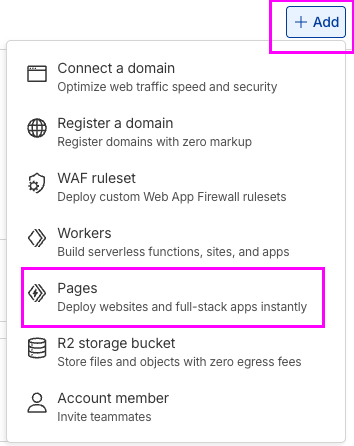
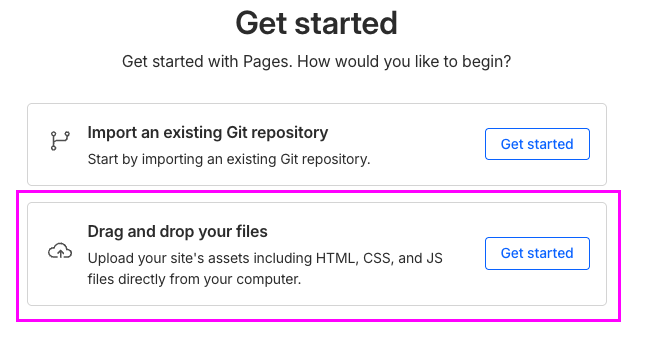
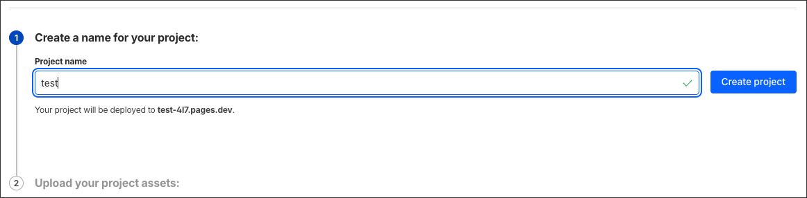

Class 13 Lab: Initiating, Loading and Deploying Final Project Sites at Cloudflare
Fall 2025 | Instructor: Stephen Metts | PGUD 5160 - CRN 2247
Preamble
In this demonstration lab, we will cover Hosting Your Quarto Final Project on Cloudflare Pages (Free Tier).
This lab guide covers steps to use Cloudflare Pages – Free Tier to host your Quarto final project as a live HTTPS website. For your final project deliverable, the critical steps are as follows:
- Render your
.qmdto HTML locally via RStudio. - Upload the HTML +
assets/folder to Cloudflare Pages using Direct Upload Option (drag & drop). - Get a stable
https://...pages.devURL to submit at the Canvas Assignment Submission Location.
1️⃣ 🌐 Understand Cloudflare Pages Free Tier
Cloudflare Pages is a static site hosting service that:
- Hosts your files on Cloudflare’s global network
- Gives you free HTTPS (SSL) automatically
- Provides a
https://your-project-name.pages.devURL
- Has a generous free tier intended for personal, student, and small projects
Key concepts:
- Static site = HTML, CSS, JS, images.
- Your Quarto project becomes a static site after you render your
.qmdto.htmllocally.
- For our class projects, we’ll use Direct Upload (drag & drop) — no Git or command line required.
2️⃣ 🧰 What You Need Before You Start
Make sure you have:
- ✅ A Quarto project for your final project(
.qmdfile)
- ✅ Quarto installed and working locally within R
- ✅ A Cloudflare account (free)
- ✅ A web browser and stable internet connection
Optional:
- A simple, short project name (e.g.,
lastname-methods-final,projectname-nyc,methods_final_lastnameetc.)
3️⃣ 🧪 Render Your Quarto Project to HTML
Cloudflare Pages cannot run Quarto itself – it only serves pre-built HTML. You need to render your .qmd locally first.
Open your Quarto project in RStudio.
Make sure your main file is something like
final_project.qmd.
Render it:
- In RStudio: click Render (or the knit/Render button).
After rendering, confirm you have:
- An
index.htmlor a main HTML file (e.g.,final_project.html)
- An
assets/folder (and possibly other supporting folders likelibs/,site_libs/, etc.)
- An
💡 Tip: If your main HTML file is not named index.html, it’s easiest to rename it to index.html before upload. Web servers look for index.html as the default homepage.
4️⃣ 🗃️ Create a “Site Folder” for Upload
To keep things tidy, make a folder that will become your site:
- Create a new folder, for example:
my-final-project-site/
- Move or copy into that folder:
index.html(your rendered Quarto file)
assets/folder
- Any other folders your HTML needs (e.g.,
libs/, images, etc.)
Your folder might look like:
5️⃣ 📝 Sign Up for Cloudflare (Free)
If you don’t have a Cloudflare account yet:
Go to: https://dash.cloudflare.com/sign-up
Sign up with your school email or another email you check regularly.
Verify your email as prompted.
Log in to the Cloudflare dashboard.
6️⃣ 🏗️ Create a Cloudflare Pages Project (Direct Upload)
In the Cloudflare dashboard, look to the right-upper sidebar for the “+ Add” drop down menu.
Choose the “Pages” option:

When asked how you want to deploy, choose:
- Drag and drop your files (not Git)

Enter a project name, such as:
methods-final-lastnameurban-ecologies-nyc-2025This will form part of your URL:
https://methods-final-lastname.pages.dev(or similar).
Click “Create project”

In the example above the project is simply named test for demonstration purposes.
7️⃣ 📤 Upload Your Quarto Site (Drag & Drop)
You should now see an interface prompting you to upload your site.
Locate your site folder on your computer, e.g.
my-final-project-site/.You have two options:
Drag & drop the entire folder into the upload area, or
Click a “Upload folder” / “Browse” button and select
my-final-project-site/.
Wait while Cloudflare:
Uploads your files
Creates a deployment
Assigns a
https://your-project-name.pages.devURL
When the deployment completes, you should see a success message and a link to “View site”.
If something fails, read any error messages (often it’s missing index.html).
8️⃣ 🔒 Confirm HTTPS & Test Your Site
Click the “View site” button from the deployment screen or open the URL shown (e.g.,
https://methods-final-jess.pages.dev).In your browser, look for:
A lock icon next to the URL (HTTPS is working).
Your final project homepage loading as expected.
Click through your navigation, check images and plots, and confirm that everything works.
If you see 404 or broken layout:
Make sure you uploaded index.html and supporting folders.
Confirm folder structure wasn’t nested like
my-final-project-site/my-final-project-site/index.html.
9️⃣ 🔁 Updating Your Site Later
If you need to fix or update your project:
Make edits locally to your .qmd and re-render to HTML.
Replace the index.html and assets inside your local site folder.
In the Cloudflare dashboard:
Go to Workers & Pages → Your project → Deployments.
Click “Create a new deployment”.
Drag & drop the updated site folder again.
Each new deployment keeps the same main URL, but you can also see previous versions.
🔟 📎 Copy and Submit Your Final URL
Once your site looks good, in the Cloudflare dashboard:
Go to Workers & Pages → Your project → Overview or Deployments.
Find your Production deployment.
Copy the URL that looks like:
https://your-project-name.pages.devPaste this URL into the Canvas Submission Location; you can also attached a
.txtwith the site url for your Canvas Final Project Submisssion.
✅ Quick Checklist
Before submitting, check:
If all are checked, you are done — your Quarto final project for the class is live on the web and you are complete. 🎉